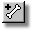
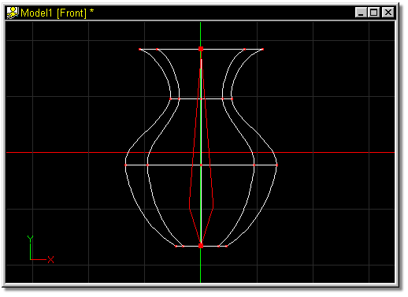
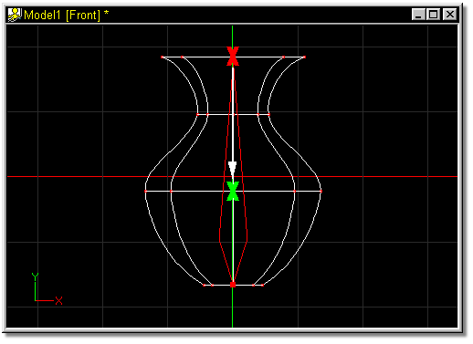
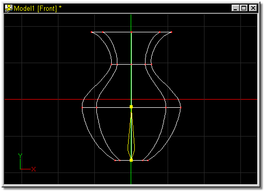
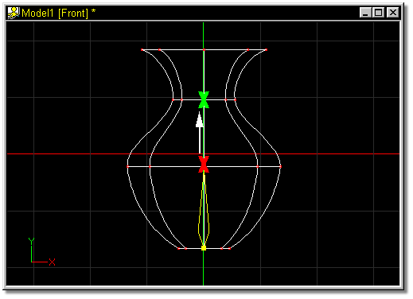

Inverse kinematics chains are controlled by adding bones in the wireframe model that you create. To add a bone to a model, click the Add button on the tool panel, then point inside the appropriate window, press the mouse button, and while holding the button down, move the mouse.
Where you click determines where a new bone is added. If you click near an existing bone, a new bone will be added to the existing one. As bones are added, the color of each bone is changed for clarity.
Each time you wish to add another bone, you need to click the Add button.
The default keyboard shortcut key for Add is A.

To insert bones into a model (in this case, a simple vase), the first step is moving the default bone.

Figure 1
To do this, click on the handle at the thin end of the bone (shown as a red X in Figure 2), drag it with the mouse in the direction of the white arrow, and release the mouse button at the Green X.

Figure 2
The result should look similar to Figure 3:

Click the Add button, then click at the top of the default bone (shown as the Red X in Figure 4). With the mouse button down, drag the mouse in the direction of the white arrow, releasing the button on the Green X.

Figure 4
The resulting bone should look like Figure 5:

Repeat this process for each bone to be added to the model.
Delete Bone
Attach Bone
Detach Bone
Group
Lasso